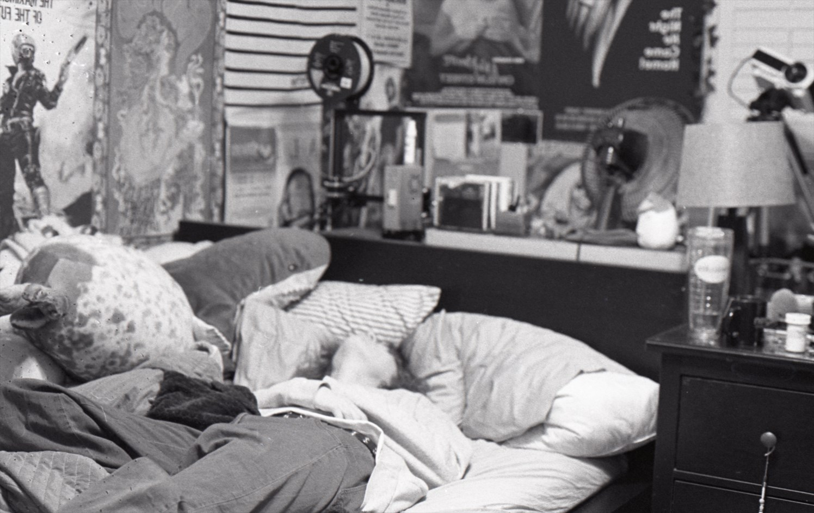
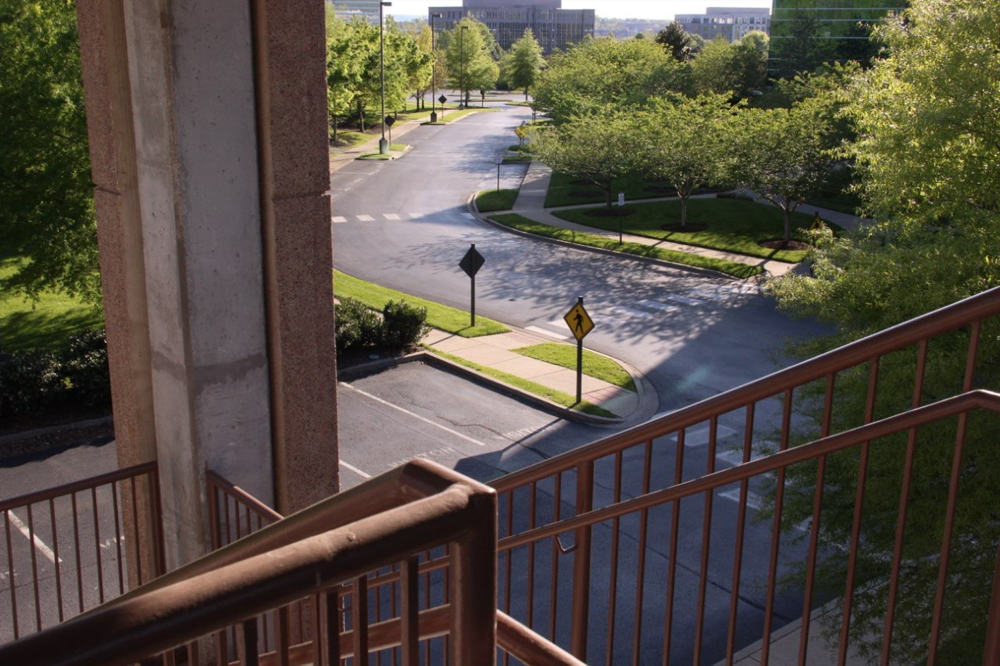

Stills at Night
An exploration into long exposures and nighttime photography.

Self Photographs
A black and white film photography project which seeks to find, understand, and essentially prove one's existence to oneself.

Pinhole Experimentation
Experiments with pinholes. Includes digital and film photos.

Spaces
Photos of spaces, both interesting and bland, which draw my attention.

Experiments
Strange practices, experiments, and methods that can't be categorized into their own category but I find interesting enough to list.